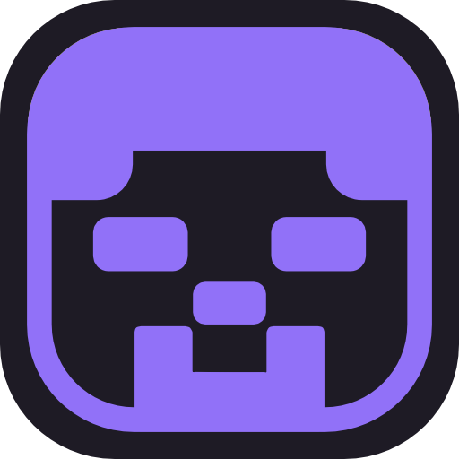

Loading MCBP…
Click Download above to open the Download Manager,
which detects your operating system and recommends the right build:
MCBPv<version>-win.x64-setup.exe (Windows
installer), MCBPv<version>-win.x64.zip,
Minecraft-Bot-Panel-<version>-x86_64.AppImage, or
MCBPv<version>-linux.x64.zip.
You do not need Node.js installed to run the prebuilt packages. On launch, the app automatically keeps its mineflayer, minecraft-data, and mineflayer-pathfinder packages synced in its local data folder, so new Minecraft versions work out of the box without waiting for a new app build.
If you want to run or build MCBP from source, install Node.js and run:
npm install
npm start
# Build installers into dist/
npm run makehost or host:port (defaults to
port 25565). Leave Version set to
Auto to detect the server's version automatically, or
pick a specific Minecraft version from the list.
WASD +
Space/Shift/Ctrl + arrow keys
(or the on-screen pad), check live HP/hunger/XP/ping/coordinates,
and interact with nearby players or mobs (Guard,
Follow, GoTo,
Look, Hit).
/commands, or local ! bot commands
(!help, !pos, !hp,
!gear, !goto, !follow,
!guard, !stop).
MCBP comes with 13 built-in scripts. Fill in a script's options first, then click its top title bar to turn it on (green) or off. You can click the headers below to preview how they toggle in the app:
Stops the server from kicking the bot for idling by performing your checked actions at random every 1200ms.
Equips the highest-tier armor pieces from inventory and keeps a totem or shield in the off-hand slot.
Automatically eats high-saturation food when hunger drops or golden apples when health is low.
Switches to the fastest harvesting tool when breaking blocks and the best weapon in combat.
Keeps a Totem of Undying in the off-hand slot and can automatically disconnect on critical HP.
Drops every item stack from the bot's inventory onto the ground. With Repeat checked, checks again every 1000ms.
Finds a nearby player and continuously paths to their coordinates using mineflayer-pathfinder.
Walks to the given world coordinates. Uses the bot's current Y level if Y is left empty.
Escorts a target player (or guards the nearest player/position) and fights nearby hostile mobs or PvP threats.
Plays autonomously: swims in water, eats food, equips gear, blocks creepers, defends itself, and collects drops.
Aims at and attacks selected target types within range using the best weapon in inventory.
Finds nearby blocks matching the block ID (such as
oak_log or stone), walks to them, and
digs.
Sends chat messages on a custom interval. Checking AntiKick adds a random 5-character tag to the end.
Click Custom Folder in the Scripts card (or open
custom/scripts/) and drop in a .js file that
exports info and script:
const info = {
name: "HelloBot",
default: { interval: 3000 },
options: [
{ type: "checkbox", label: "Repeat", id: "repeat" },
{ type: "input", label: "Greeting", id: "greeting" },
],
};
async function script(bot, log, clearLog, getOption, scriptRepeater) {
if (!bot) return log("HelloBot: Connect a bot first");
const [repeat, greeting] = await Promise.all([
getOption("repeat", info.name),
getOption("greeting", info.name),
]);
const sendGreeting = () => bot.chat(greeting || "Hello!");
sendGreeting();
if (repeat === "on") {
await scriptRepeater(sendGreeting, info.default.interval);
}
}
module.exports = { info, script };name, optional
default settings, and the list of
options (either type: "checkbox" or
type: "input").
null if not connected). bot.pathfinder is
already loaded on spawn.
log prints a timestamped line in the
Logs panel, while clearLog deletes any
previous log lines containing match so status updates
don't spam the log.
"on" / "off") or text
input (string) from the card.
fn() every intervalMs (minimum
50ms) while the script is toggled on, and stops
automatically when you toggle the script off or disconnect.
You can change the look of the entire app by editing
custom/theme.css. Any CSS rules or variable overrides in
that file are loaded automatically across every screen:
:root {
--bg-dark: #16131f;
--panel-bg: #1e1a2b;
--background-color: #9171f8;
--dark-main-color: #6b4ce6;
--main-color: #b197fc;
--light-main-color: #d3c2ff;
--title-color: #f2edff;
--accent-dark-bg: #2b2342;
--accent-dark-hover: #362c54;
--accent-border: #a488ff;
}